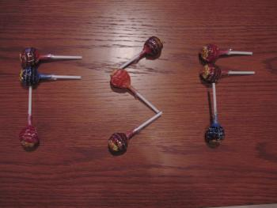
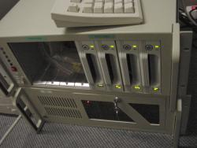
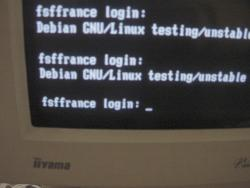

| FSF FSF Europe FSF France GNU GNU Espagne April LSFN |
| Home | Contact | Thanks | Stats | About us |
 | FSF France Free Software is the conscience of software | France Europe United-States |
The FSF France machine is born, 12 April 2001 at 16:12 !The baby was delivered in the Nevrax machine room in Paris. It weights 70kg and is 8U tall. We celebrated the birth with the whole Nevrax team with an orgy of 60 chupa chups that were also used to design a new logo proposal.    Sincerly yours, Loic Dachary and Rodolphe Quideville. |
|
|
webmaster@fsfeurope.org |
| Copyright (C) 2001 FSF France, 8 rue de Valois, 75001 Paris, France Verbatim copying and distribution of this entire article is permitted in any medium, provided this notice is preserved. |